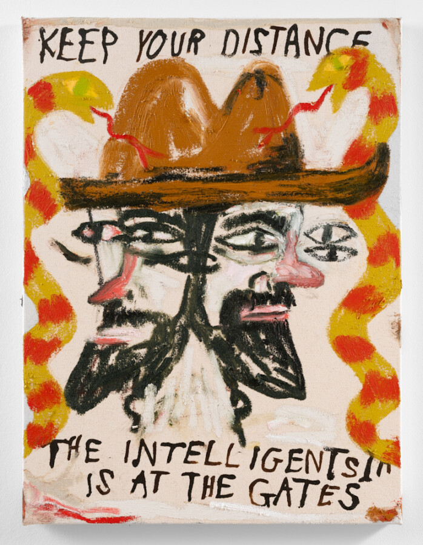

Colin Matthes: The Intelligentsia is at the Gates
OS Projects is pleased to present “The Intelligentsia is at the Gates,” a solo exhibition of drawings, paintings and prints by Colin Matthes. The exhibition opens on February 21, 2026 and will be on view through April 11, 2026. The gallery will host a reception for the artist on Saturday, February 21 from 1 – 3 pm.
Colin Matthes uses storytelling, anxiousness, research and humor to make art that solves problems or is about the idea of solving problems. He works on several projects simultaneously, each distinct but informing the others, while foregrounding the means of production: the process, the fingerprints and the mistakes. Juggling multiple responsibilities—as a father, husband, entrepreneur and university gallery director—Matthes has no room for indecision or aimlessness. He creates his work in the garage, basement or on the couch, wherever and whenever he can steal some time. Art matters, but the artworld is an afterthought on this island.
“The Intelligentsia is at the Gates” questions the certainty of our convictions and our confidence that we can arrive at the “right” conclusions about the world. Our belief systems are initially shaped by our parents, then modified and reinforced by friends and the media we choose to pay attention to: the “right” books, the “right” feeds, the “right” podcasts. Yet we rarely ask ourselves the core question of epistemology: how do we know what we know? What is the source of our knowledge, and how reliable is the source? And why are we so certain that our sources and interpretations are the right ones?
As Matthes points out in his incisive, unorthodox and at times hilariously absurd exhibition, we should be suspicious of anyone who claims to have it all figured out, including ourselves.
About the Artist
Colin Matthes grew up on a gravel road near a village with three bars, a post office and the World’s Greatest Junk Parade. Before he became an artist, he installed temporary electric at small town county fairs and wired trailer parks. Matthes’ current practice encompasses drawing, painting, sculpture, installation, zine and graphic production, and public art projects.
Matthes has exhibited his work nationally and internationally in Milwaukee, Chicago, New York, Los Angeles, Antwerp, Amsterdam, Quebec and Dublin, among other cities. Recent solo exhibitions include “Free Bird” at Invisible Unlimited (Milwaukee), “What is Right about the Right?” at St. Kate Arts Hotel (Milwaukee), “It’s My Fault; It’s Free,” at The Alice Wilds (Milwaukee), and “The Days Go By Like Wildness,” at James Watrous Gallery (Madison, WI.) Matthes is the director of the art galleries at the University of Wisconsin-Parkside.
About OS Projects